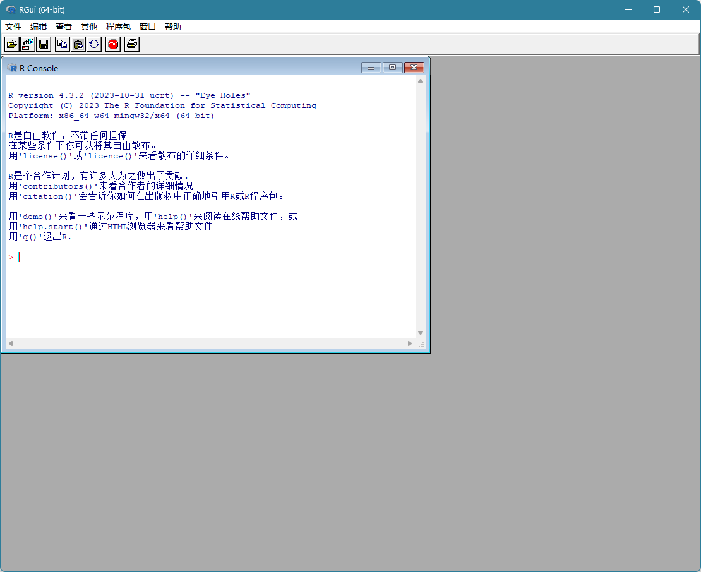
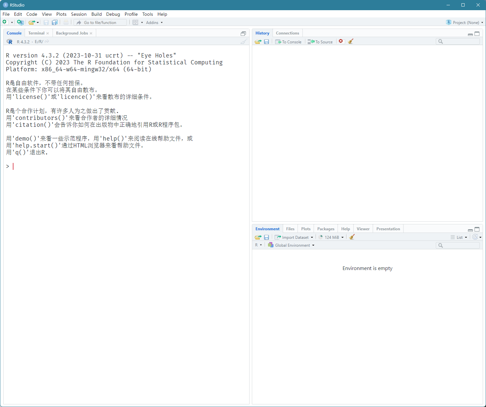
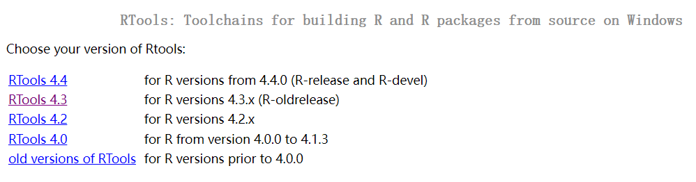
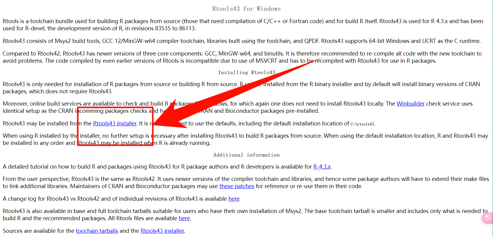

1 R/Rstudio/Rtools
1.1 什么是R语言？
R语言是一门编程语言，但是同时一个统计软件。R语言的全称是：The R Project for Statistical Computing
如果你是一个医学生或者医生，那么你一定用过或听说过SPSS，SPSS是一个统计软件，R语言与之类似，也可以实现各种统计分析，但不同的是，R语言需要自己编写代码，而SPSS只要鼠标点击即可（其实SPSS也可以写代码的）。所以你可以简单理解为R语言是一个比SPSS更加强大的统计软件。
与常见的其他统计分析软件（比如：SPSS、Excel、SAS、Stata、Graphpad Prism）相比，R最主要的优势是免费和功能更加强大。
R语言的功能非常强大，因为它需要自己编写代码，所以和Python类似，也是一门编程语言，除了统计分析，R语言还非常擅长数据分析、数据可视化、统计建模等。
- 安装路径不能有中文，必须先改成英文（也可以安装在D盘，等）；
- 安装时建议取消勾选
Message Translation，这样报错信息都是英文，方便你搜索解决方法。
以下是几个官方网址：
- R官方网址：https://www.r-project.org/
- R官方镜像网址：https://cran.r-project.org/mirrors.html
根据视频教程操作即可，注意版本选择。
1.2 什么是Rstudio？
当你安装完R语言之后，它是可以直接使用的，只是此时它的界面非常丑陋，而且缺少各种好用的功能。

上图是R语言的原生界面，看起来很原始，毫无美感，感觉和高大上没什么关系。
而RStudio是专门为R语言量身定制的集成开发环境（简称IDE），你可以理解成RStudio是R语言的一层漂亮的衣服，安装了RStudio之后，首先是使用界面更加漂亮、更加现代化了，除此之外，还增加了很多顺手的小功能。

安装RStudio之后，界面明显更加好看了，非常的美观，各种按钮、布局等也更加的现代化。
由于我进行了一些自定义的界面设置，部分细节可能和你的不同。
以下是RStudio官方下载地址：
- RStudio官方下载网址：https://posit.co/download/rstudio-desktop/

1.3 Rtools
为了保证顺畅的使用，Windows用户还需要安装Rtools，MAC和linux用户不需要安装。
下载Rtools的官方地址是：https://cran.r-project.org/bin/windows/Rtools/

打开后需要选择合适的版本，注意不要选错，我选的是RTools4.3（因为我的R是4.3.x版本，你不要选错，你的R如果是4.4.x，你就要选择RTools4.4，明白吗？），点击后来到一下界面，点击Rtools43 installer（如果你选的不是RTools4.3，那么数字也会不同，不难理解吧）即可下载exe安装文件，下载完点击安装即可。

视频版教程见B站。
都安装好之后就可以开始正式的R语言学习之旅了！